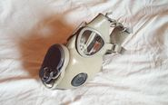

M10 був одним із багатьох східноєвропейських клонів маски M17 і отримав широке використання Чехословацькій народній армії та Східнонімецькій народній армії.
Чехословацький M10 дуже схожий на M17 США, але має багато чітких відмінностей. Система видиху є іншою, вона має металевий корпус з видихом, направленим напряму назовні. Замість видиху в стилі M17, де клапан покритий гумою і витіснений через нижню частину корпусу. Відвори фільтра більші і мають різьблення. Головка джгута змінюється, оскільки головка джгута M10 виконана з товстої сірої еластичної тканини з гумовою головкою та великими гумовими штифтами. Виявлено, що аутсайдер M17 відповідає M10, але помітно менше, і фільтри не є взаємозамінними між масками. Внаслідок різних розмірів вдихання та кріплень. Маску M10 використовувала як Чехословаччина, так і Східна Німеччина. Але він все ще використовується в Чехії.
M10 (M) користується великою популярністю серед надлишкового ринку, аплікаторів та колекціонерів. Маску можна знайти по Інтернету за цінами від 15 до 30 доларів США.